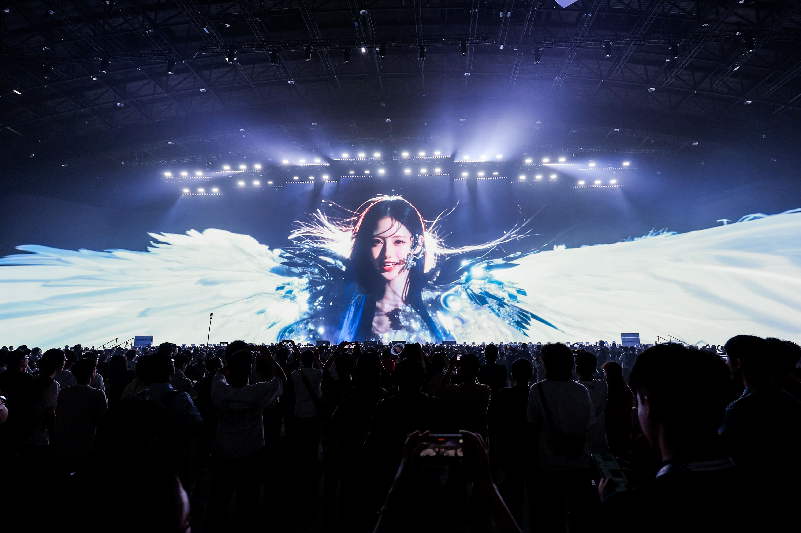
成本高 · 周期长 · 只有极少数作品有机会
先做小样 · 围绕画面讨论 · 再决定下一步
视频模型一句话出片，画面、声音、对白一起出来
大模型写程序画图、做动画、做视频，没有用视频模型，每一帧都是代码
一张参考图，模型在 Blender 里建出巨龙、自己运镜出片；Adobe 也在把全家桶开放给外部 AI
把一张蒸汽火车的老图纸交给模型，几分钟在 Blender 里建出 3,295 个可编辑零件
模型先在 Blender 建好房子，再变成可以漫游的三维场景
没有用视频模型，角色、动画和镜头，全部由模型写代码画出来
说一句「剪成节奏紧凑的 YouTube 片」，agent 自己剪掉口癖、配 B-roll、发布
不开 PPT，让 AI 写网页演示，能放视频，改完就能发
把想要的画面写清楚，让模型写动画代码，再渲染成片
把口播素材交给剪辑 agent，一句话说清节奏，它去剪、去口癖、加动效
让模型直接操作三维软件，说几句话就搭出完整场景
把设计品味写成 design.md，AI 照着它做出同一种风格
同一件事做过 3 遍，就写成 Skill，以后交给 AI 自己跑
先去 GitHub 找开源项目，交给 agent 装好、改好、跑起来
一个人 + agent 军团 + 社区伙伴，再连接更多生态
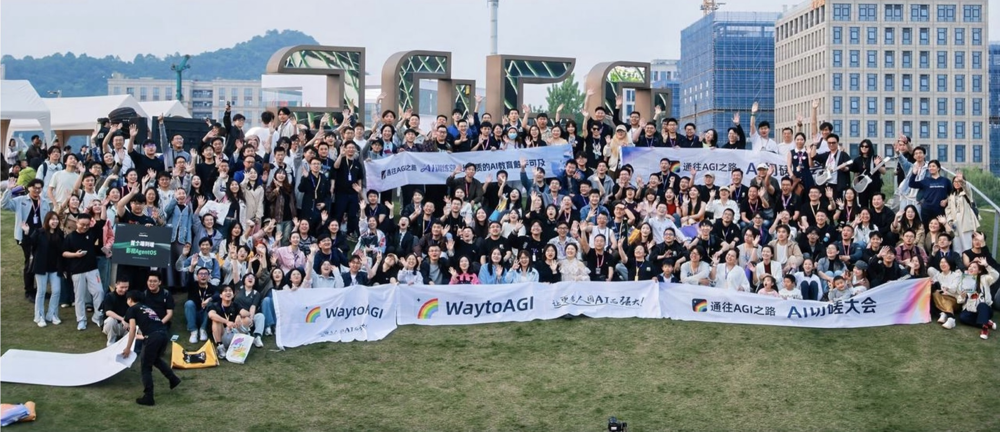
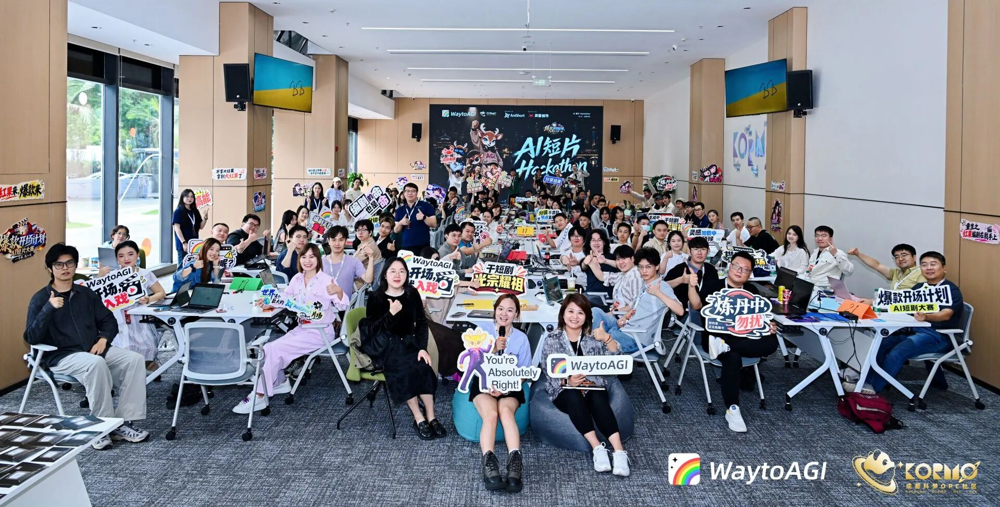
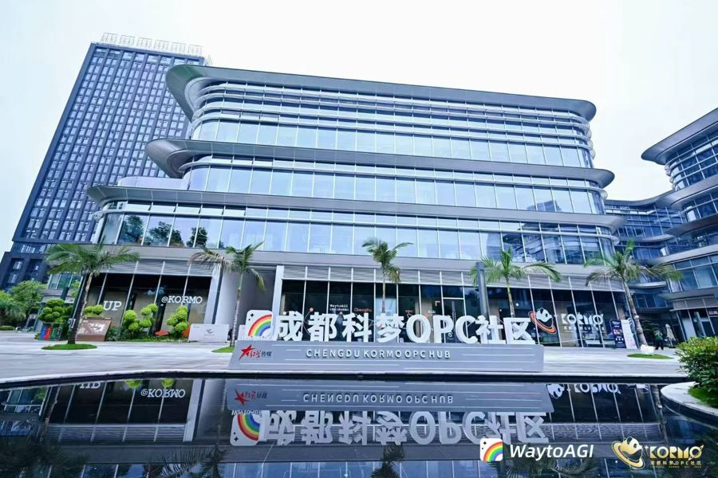
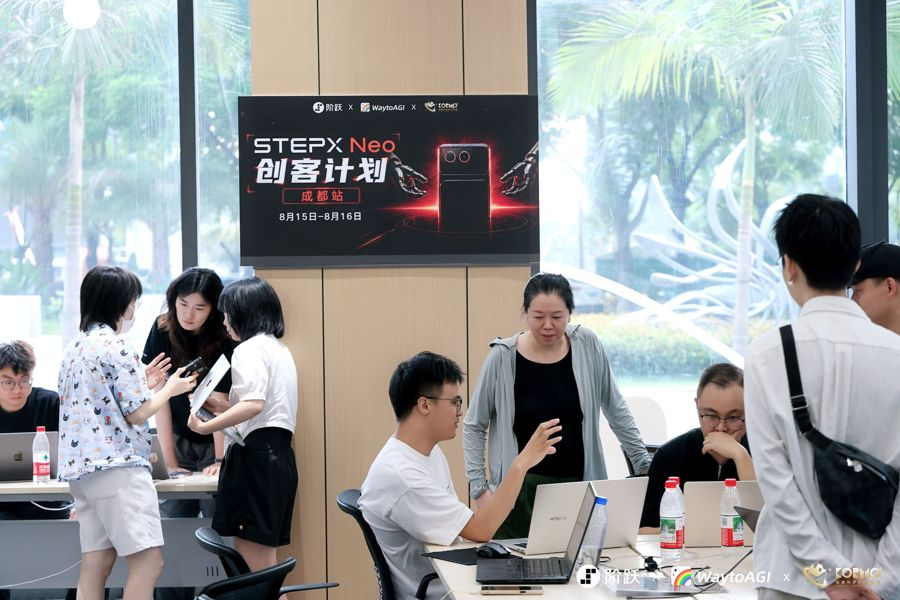
活动库收录第 3 期
围绕创作主题，组织持续学习与实践
活动库收录第 6 期
连接对 IP 与影视创作感兴趣的参与者
开营、带练、实践、结营
配合晚 8 点共学持续交流
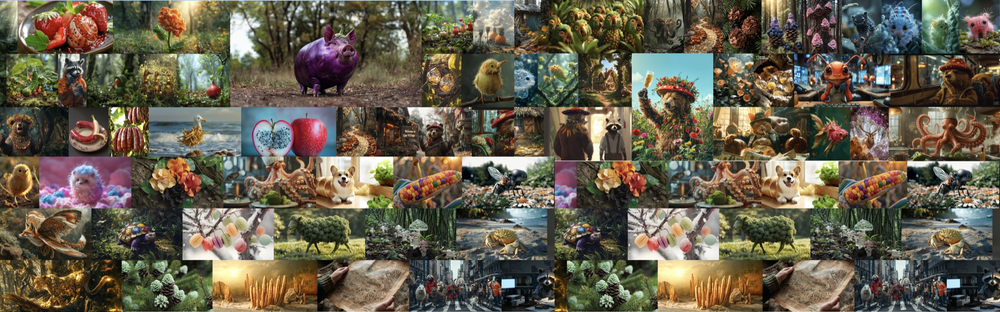
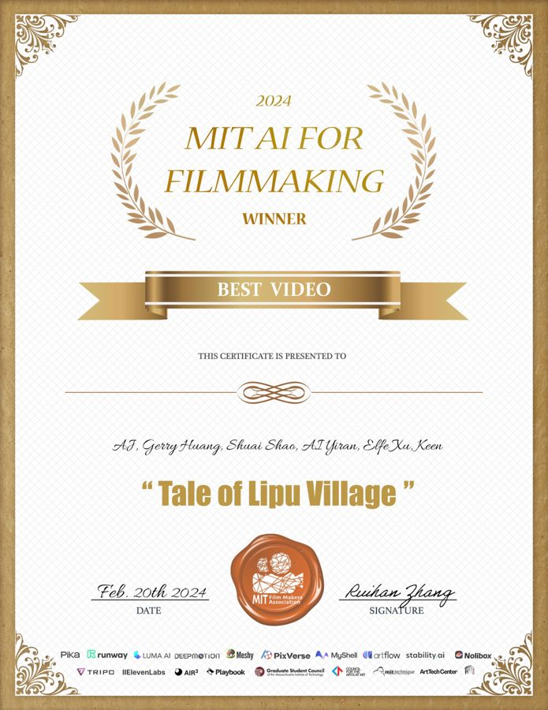
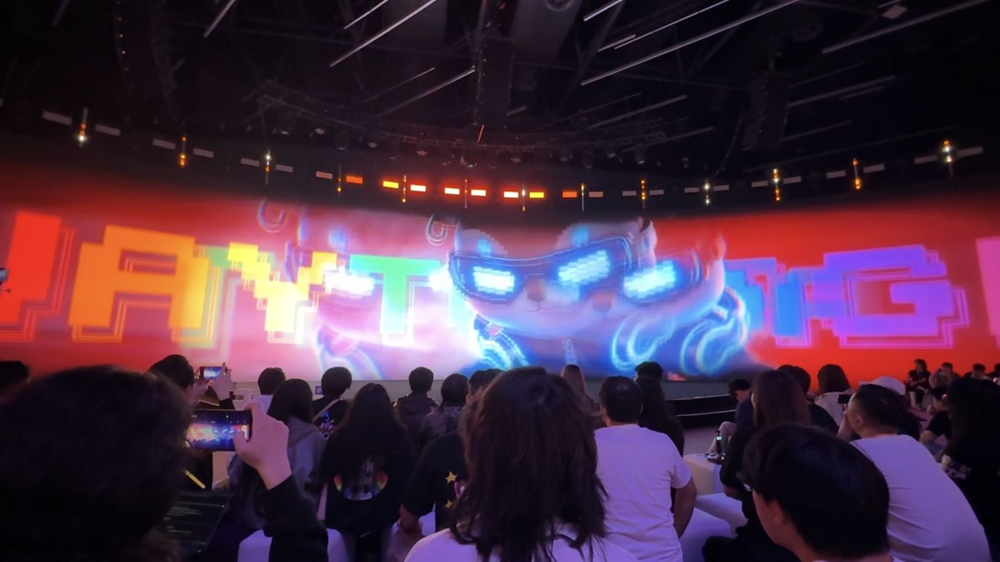
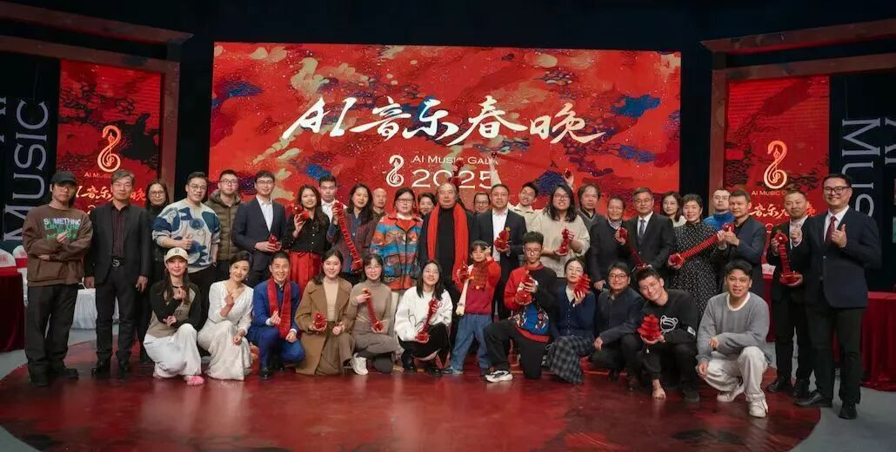
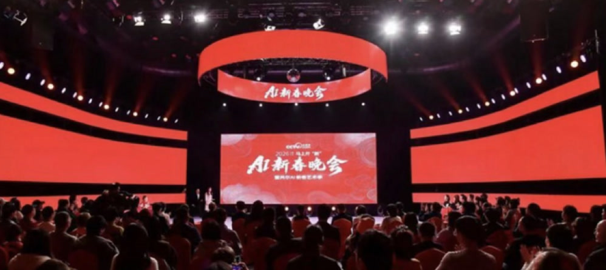
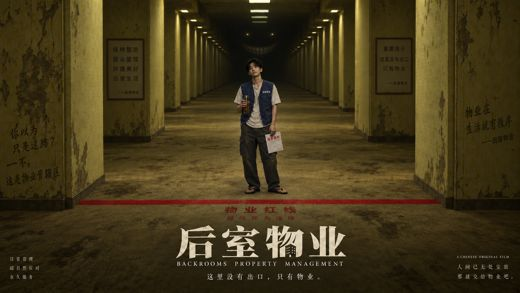
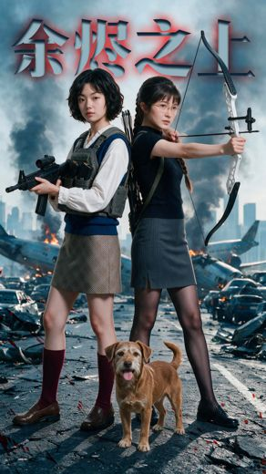
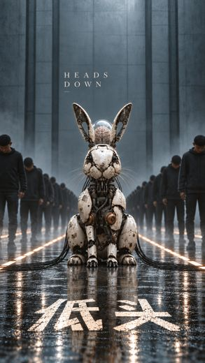
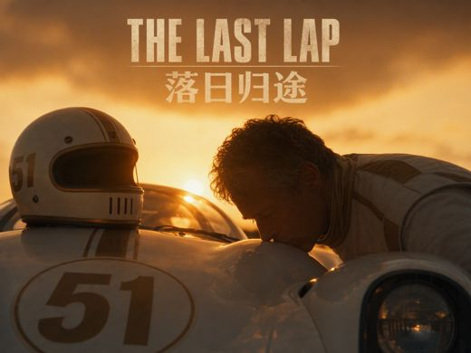
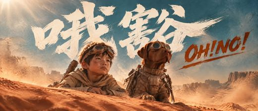
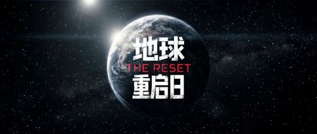
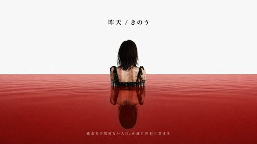
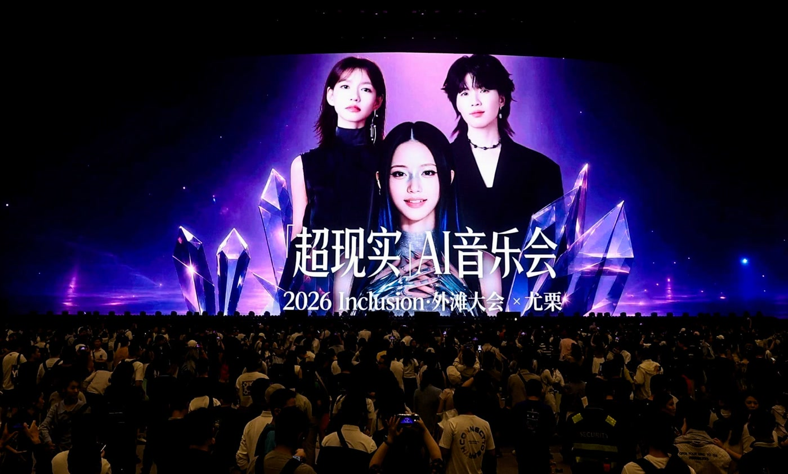
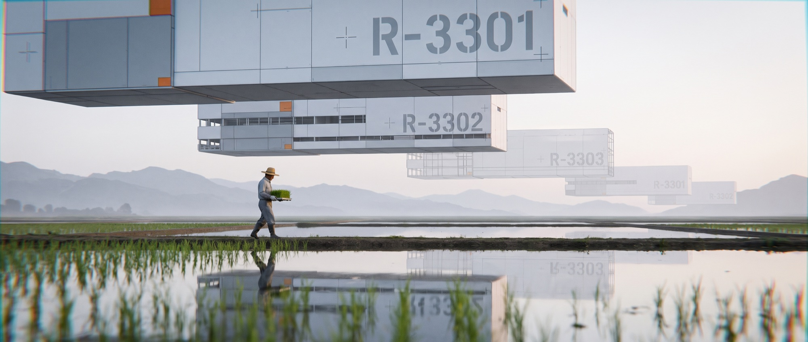
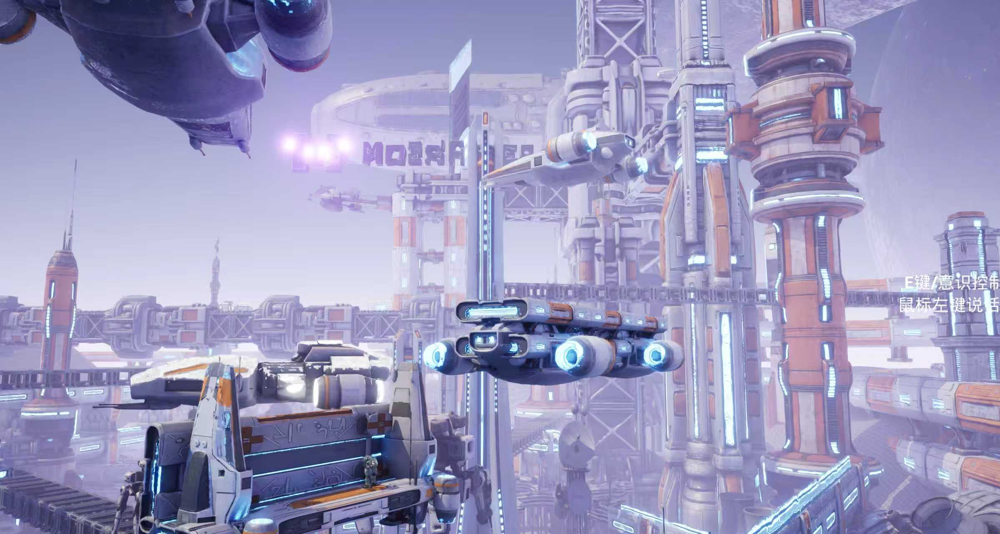
作家 · 出版机构
版权方
AI 创作者
OPC 团队
技术平台
产业机构
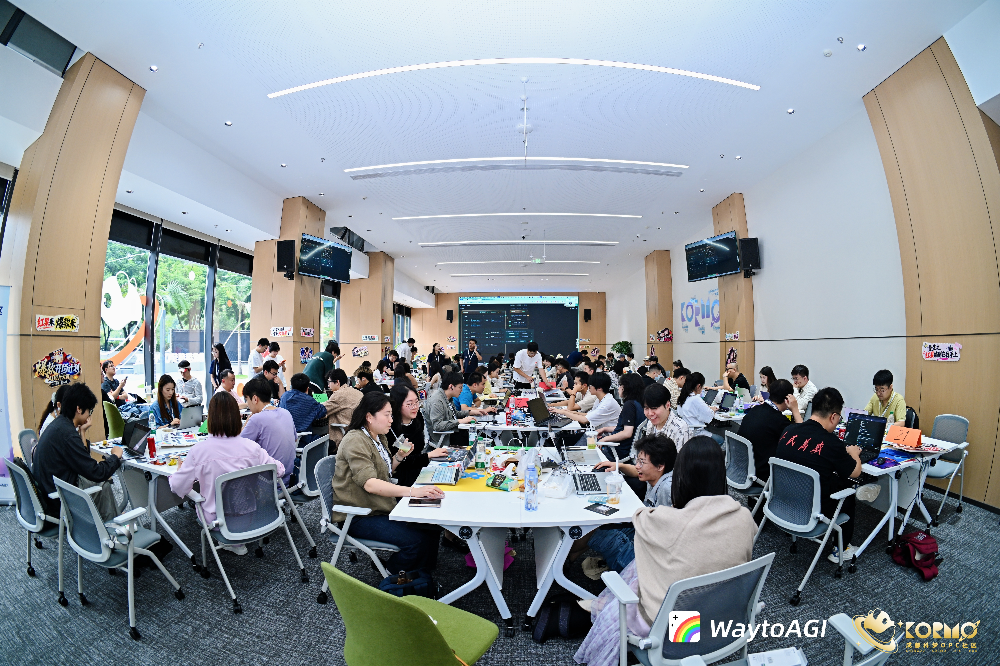